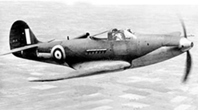

P-400 Airacobra

- Разработчик: Bell
- Страна: США
- Первый полет: 1941
- Тип: Многоцелевой истребитель
Белл предложила "Аэрокобру" Англии и Франции. Экспортный вариант получил индекс Р-400 и уже в апреле 1940-го
Британская комиссия по закупке вооружений подписала Вашингтоне контракт на поставку в Королевские ВВС н
ового самолета. Правда, английский летчик облетал первый раз "Аэрокобру" лишь через восемь месяцев. Инжен
еры фирмы "Белл" сделали все возможное, чтобы их самолет понравился заокеанским союзникам.
"Аэрокобру" облегчили почти на тонну (сняв, практически, все оборудование), тщательно отполировали и дорабо
тали зализы, чтобы снизить аэродинамическое сопротивление. Зато теперь американцы, не кривя душой, предлагали
англичанам убедиться в отличных характеристиках своего детища - облегченная "Кобра" разгонялась до 644 км/ч и
имела дальность 1610 км. Естественно, что когда серийные машины прибыли на Британские острова, их данные ока
зались значительно ниже. А французский заказ остался лишь на бумаге, поскольку уже в июне 1940-го по Парижу
маршировали части вермахта.
Великобритания должна была получить 675 истребителей. Вначале англичане, со свойственной им независимостью, п
ланировали присвоить машине новое обозначение "Карибу", но, в конце концов, оставили родное "американское" им
я. Экспортный Р-400 (или "Модель 14А") соответствовал P-39D, однако отличался двигателем V-1710-E4 и 20-мм пуш
кой "Испано" М1 (вместо 37 мм).
К сентябрю 1941-го первые 11 "Аэрокобр" прибыли морем в Англию и вошли в состав 601-й эскадрильи. После обуче
ния в Норфолке, экипажи на истребителях перелетели на свой базовый аэродром в Дуксфорде. Там "Аэрокобру" подв
ергли тщательным эксплуатационным испытаниям, результатом которых англичане остались недовольны. Прежде всего
, скорость полностью боеготового истребителя оказалась на 50 км/ч ниже, чем обещала фирма "Белл". Взлетная дис
танция составляла 686 м, и часть аэродромов, с которых спокойно уходили в полет "Харрикейны" и "Спитфайры", ст
ановилась непригодной для эксплуатации "Кобры". При стрельбе из пушки и пулеметов пороховые газы в большом кол
ичестве попадали в кабину и явно не улучшали самочувствие летчику. К тому же, отдача при стрельбе практически
сразу приводила к отказу гирокомпаса, и этот недостаток англичане называли одним из самых серьезных.
После некоторых доработок четыре "Аэрокобры I" (обозначение Р-400 в Королевских ВВС) 601 -и эскадрильи перелет
ели на базу Мэнстон для реальной проверки в военных условиях. Отсюда "Кобры" выполнили четыре боевых вылета, ат
аковав у побережья Франции немецкие корабли. Но из-за отсутствия достаточного количества запасных частей и, в
сновном, из-за обнаруженных серьезных недостатков к декабрю 1941-го англичане сняли самолет с вооружения, а за
каз на поставку аннулировали (всего успели получить 469 машин).
| Летно технические характеристики | |
|---|---|
| Модификация | P-400 |
| Размах крыла, м | 10.36 |
| Длина, м | 9.19 |
| Высота, м | 3.61 |
| Площадь крыла, м2 | 19.79 |
| Масса, кг | |
| - пустого самолета | 2478 |
| - нормальная взлетная | 3558 |
| Тип двигателя | 1 ПД Allison V-1710-E4 |
| Мощность, л.с. | 1 х 1125 |
| Максимальная скорость , км/ч | 571 |
| Крейсерская скорость , км/ч | 320 |
| Практическая дальность, км | 740 |
| Скороподъемность, м/мин | 621 |
| Практический потолок, м | 7315 |
| Экипаж, чел | 1 |
| Вооружение: | одна 20-мм пушка Hispano (60 патронов), две 12,7- мм пулемета и четыре 7.62-мм пулемета возможна подвеска одной 227 кг бомбы . |